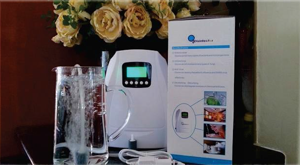
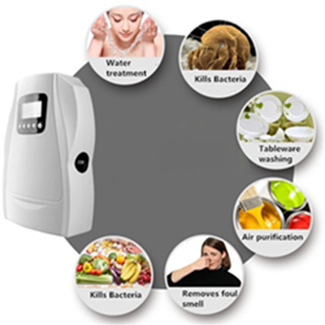

Ozonater
The body has a habit of storing dangerous and debilitating toxins in the adipose(fat) tissue, because this adipose tissue is located subcutaneously, Ozone is able to penetrate the adipose tissue, oxidise the toxins therefore rendering them harmless enough to be eliminated by the body. Ozone is a more effective disinfectant than chlorine, chloramines and even chlorine dioxide. An ozone dose of 0.4 mg for 4 minutes is usually effective for pre-tested water. Several studies proved that ozone, unlike chlorine products, can deactivate resistant micro-organisms.

Benefits
- Neutralising Toxins / Pesticides in your drinking water.
- Neutralising Toxins / Pesticides on your fresh produce
- Destroying Bacteria / Pathogens in your home on Tables, Door handles, Railings & Toilets, toothbrushes, etc... also Spray bottle application
- Destroying Smell’s in Rooms (Mould etc), Vechicles (Cig smoke, spillages), Offices, Classrooms, etc...
- Ozonating / Oxygenating your drinking water - The excess oxygen in the water is absorbed into your stomach and bloodstream to assist with cell growth and help your immune system. Ozone increases the phagocyte (pathogen eating) action of white blood cells. Ozone activates both monocytes and lymphocytes. It increases oxygen supply to the brain. It improves oxygenation and metabolism by accelerating the Citric acid Cycle which is the main cycle for the liberation of energy from sugars. Ozone also changes the electric charge of the blood cell so that they won’t clump together, which increases their ability to absorb oxygen and release it to tissues. Your body needs to maintain at least a 60% oxygen level for a optimum health benefit.
- The body has a habit of storing dangerous and debilitating toxins in the adipose (fat) tissue, because this adipose tissue is located subcutaneously, Ozone is able to penetrate the adipose tissue, oxidise the toxins therefore rendering them harmless enough to be eliminated by the body. Many people drinking Ozoneated water experience heavy metal release from their body after a few days. The uses and benefits of the Ozone disinfector are fantastic.
